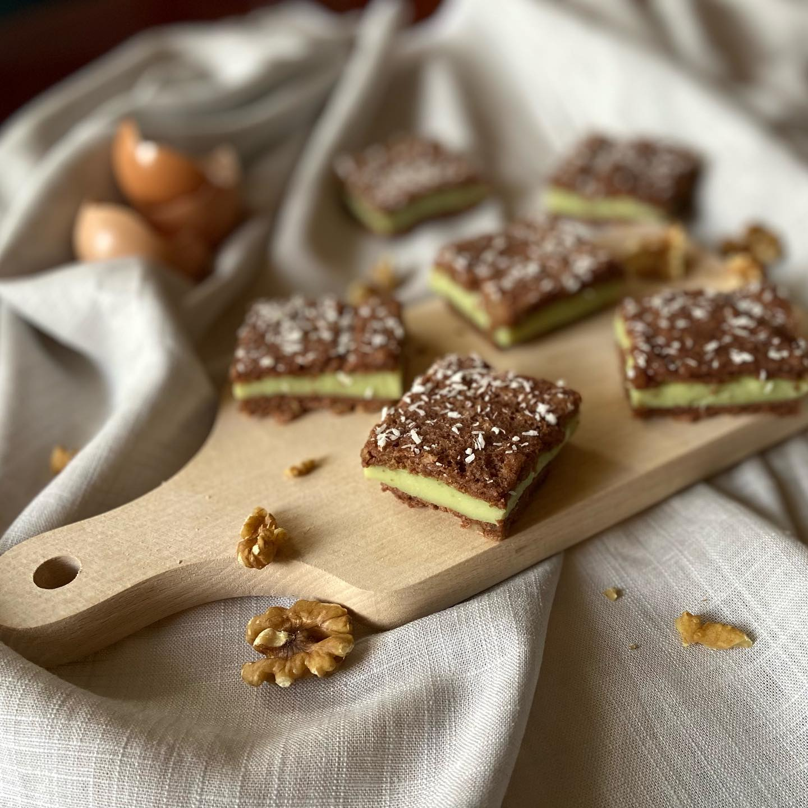

Orechové rezy podľa @jidlo_jako_cesta — Normy Jedál
Ořechové řezy bez mouky s krémem z pudinku matcha. Ale klidně dejte i jiný, budou super i s čokoládovým, vanilkovým nebo banánovým. Pečou se na dvou plechách, tak se nemusíte bát prokrajování, dvě placky se prostě vždycky povedou. Celý recept pro sladší víkend je na webu (@jidlo_jako_cesta)
➖
#rezy #orechoverezy #wallnuts #healthydessert #eggwhites #peceni #pecenijeradost #recept #matcha #sladke #kekave #matchapudding #pudinkoverezy #pudink #jidlojakocesta